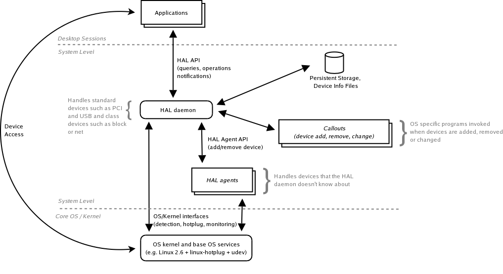
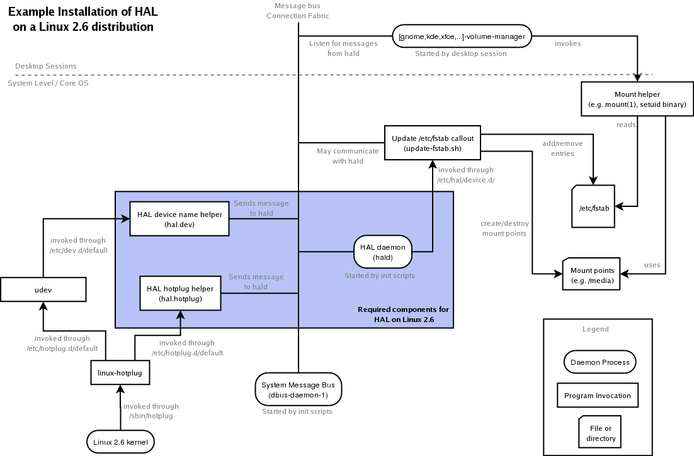
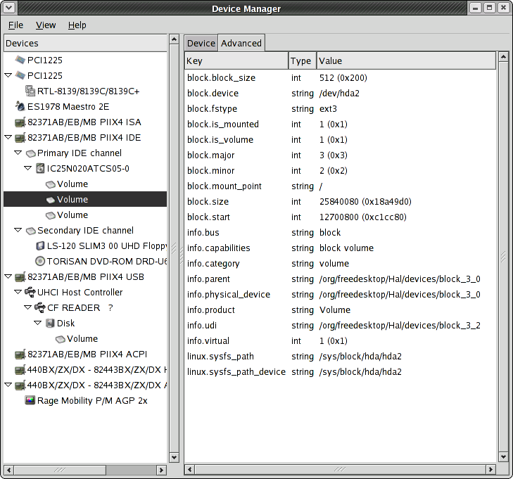
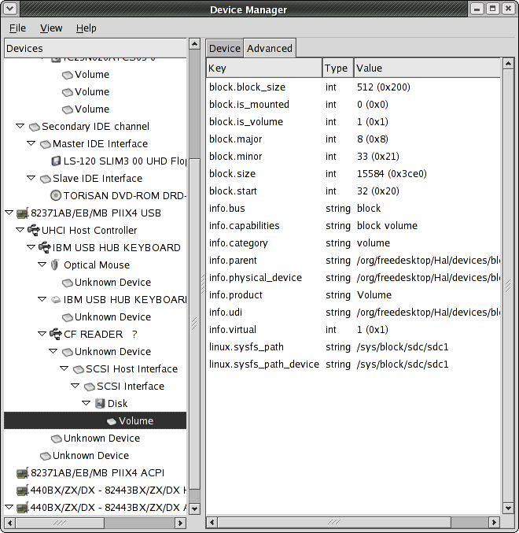
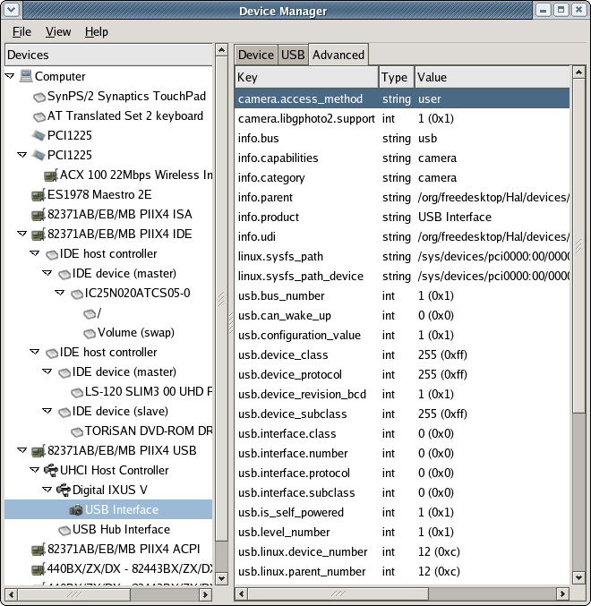

This document concerns the specification of HAL which is a piece of software that provides a view of the various hardware attached to a system. In addition to this, HAL keeps detailed metadata for each piece of hardware and provide hooks such that system- and desktop-level software can react to changes in the hardware configuration in order to maintain system policy.
A piece of hardware, called a device object in HAL, is identified by a unique identifier and a set of key/value pairs referered to as device properties. Some properties are derived from the actual hardware, some are merged from device information files and some are related to how the device is configured. This document specifies the set of properties and gives them well-defined meaning. This enable system and desktop level components to make a distinction between the different device objects and use and configure the devices based on these properties.
HAL provides an easy-to-use API through D-BUS which is an IPC framework that, among other things, provides a system-wide message-bus that allows applications to talk to one another. Specifically, D-BUS provides asynchronous notification such that HAL can notify other peers on the message-bus when devices are added and removed as well as when properties on a device changes.
The most important goal of HAL is to provide plug-and-play facilities for UNIX-like desktops with focus on providing a rich and extensible description of what the devices are. HAL has no other major dependencies apart from D-BUS which, given sufficient infrastructure, allows it to be implemented on many UNIX-like systems. The major focus, initially, is systems running the Linux 2.6 series kernels.
Havoc Pennington's article ''Making Hardware Just Work'' motivated this work. The specification and software would not exist without all the useful ideas, suggestions, comments and patches from the Free Desktop and HAL mailing lists.
All trademarks mentioned belong to their respective owners.
The HAL consists of a number of components as outlined in the diagram below. Note that this diagram is high-level and doesn't capture implementation details.

Details on each component
HAL daemon
A system-wide daemon that maintains a persistent database of device objects. The daemon is also responsible for merging information from the device information file repository and managing the life cycle of device objects. The HAL daemon also contains detection and monitoring code for buses (such as PCI and USB buses) and devices (such as networking and storage devices). The HAL daemon notifies system level components through callouts and session level components using the D-BUS interface.
HAL agents
The term HAL agent is used to characterize programs that is involved in the detection and monitoring of devices not supported directly by the HAL daemon.
Any program can be a HAL agent; all it means is that the program communicates with the HAL daemon using a specific interface. Examples of use that come to mind are prototypes for supporting vendor or OEM specific buses/devices, integration of existing device detection/monitoring frameworks etc.
Applications
This represents the end consumers of the HAL and comprises both applications that need to search for a device, but also (existing) device specific libraries and/or services that provide operations on devices. Specifically, the application or device library can obtain the ''address'' (the special device file or other details), of the device through HAL to interact with the device through the kernel as normal.
In addition, this group include desktop environments such as GNOME or KDE. Specifically, using HAL, desktop environments may include session-level daemons enforcing certain policies when the device database managed by the HAL daemon changes. Such policies may include starting a photo management application when a camera is plugged in, assisting the user in finding driver software and device information files for a new device, displaying link information about network devices, mounting removable storage and so on.
Note that several desktop sessions may be active on the same system; it is the responsibility of session-level software to arbitrate between devices.
Callouts
Callouts are programs invoked just after the HAL daemon have detected a device, but just before desktop session level applications are notified through the D-BUS interface. As such, callouts can be used to maintain system-wide policy (that may be specific to the particular OS) such as changing permissions on device nodes, updating the systemwide /etc/fstab file or configuring the networking subsystem.
The HAL uses D-BUS to provide a ''network API'' to both desktop applications and the aforementioned HAL agents. As D-BUS is designed to be language independent, potentially many languages / runtime systems will be able to easily access the services offered by HAL. The D-BUS API is detailed in the chapter called D-BUS Network API.
Note that HAL doesn't enforce any policy at all, this is left for desktop environments and operating systems vendors to implement. However, to ensure interoperability between operating systems and desktop environments, recommendations and best practises on how to enforce policy is discussed in the chapter called Enforcing Policy.
On a Linux 2.6 system HAL is implemented as shown in the diagram below:

Highlights
HAL depends on the udev and linux-hotplug packages
The diagram shows an example callout program, update-fstab.sh, that creates/destroys mount points and modifies the /etc/fstab file accordingly whenever storage devices are added or removed.
A session-level daemon, *-volume-manager, for mounting storage devices is shown. This piece of software depends on a properly updated /etc/fstab file and a setuid mount(1) binary that allows an unprivileged user to mount devices marked with option user in the /etc/fstab file.
The update-fstab.sh and *-volume-manager programs are only examples on how to enforce policy and are not part of HAL proper. An OS vendor may choose to enforce policy in a different way e.g. he might want to ignore the /etc/fstab file and mount storage volumes in the callout or run a daemon with sufficient privileges. See the chapter called Enforcing Policy for more details.
It is important to precisely define the term HAL device object. It's actually a bit blurry to define in general, it includes what most UNIX-like systems consider first class objects when it comes to hardware. In particular, a device object should represent the smallest unit of addressable hardware. This means there can be a one-to-many relationship between a physical device and the device objects exported by HAL. Specifically, a multi-function printer, which appear to users as a single device may show up as several device objects; e.g. one HAL device object for each of the printing, scanning, fax and storage interfaces. Conversely, some devices may be implemented such that the HAL device object represent several functional interfaces. HAL is not concerned with this duality of either one-to-many or many-to-one relationships between device objects and the actual iron constituting what users normally understand as a single piece of hardware; a device object represents the smallest addressable unit.
Device objects in HAL are organised on a by-connection basis, e.g. for a given device object X it is possible to find the device object Y where X is attached to Y. This gives structure to the device database of HAL; it is possible to map the devices out in a tree. Further, software emulation devices exported by a kernel, such as SCSI emulation for USB Storage Devices, are also considered device objects in HAL. This implies that kernel specific bits leak into the device object database, however users of HAL won't notice, such device objects are not referenced anywhere in the device objects that users are interested in; they are merely used as glue.
In addition to provide information about what kind of hardware a device object represent (such as a PCI or USB device) and how to address it, HAL merges information about the functional interfaces the OS kernel provides in order to use the device; in most cases this is represented on the device object as a string property with the name of the special device file in /dev. In addition to the special device file, a number of other useful properties are merged. This means that both hardware and functional properties are on the same device object which is very useful for an application programmer. For example, an application might query HAL for the device object that exports the special device file /dev/input/mouse2 and learn that this is provide by an USB mouse from a certain manufacturer by checking the properties that export the USB vendor and product identifiers. See the chapter called Device Capabilities and the chapter called Device Properties for details.
On a formal level, a device object is comprised by
UDI
This is an identifier, the Unique Device Identifer, that is unique for a device object - that is, no other device object can have the same UDI at the same time. The UDI is computed using bus-specific information and it is unique across device insertions. It is also independent of the physical port or slot the device may be plugged into.
Properties
Each device object got a set of properties which are key/value pairs. The key is an ASCII string while the value can be one of several types
string - UTF8 string
int32 - 32-bit signed integer
bool - truth value
double - IEEE754 double precision floating point number
Properties of a device object carry all the important information about a device object. For organisational reasons properties are also namespaced using ''.'' as a separator.
It can be useful to classify properties into three groups
Metadata - Information about how the devices are connected with respect to each other (parent/child relationships), what the device is, what it does etc.
Device specific information - vendor ID, product ID, disk serial numbers, number of buttons on a mouse, formats accepted by a mp3 player and so on.
Usage specific information - Network link status, special device file, mount location etc.
The first category is determined by HAL, the next is merged from either the hardware itself or device information files and the last is intercepted by monitoring the operating system. This specification is concerned with precisely defining several properties; see the chapter called Device Properties and onwards for more information. As a complement to device properties, HAL also provides conditions on HAL device objects. Conditions are used to relay events that are happening on devices which are not easily expressed in properties. This includes events such as ''processor is overheating'' or ''block device unmounted''.
The fundamental idea about HAL is that all ''interesting'' information about hardware that a desktop application needs, can be obtained by querying HAL. Below is a screenshot of a simple device manager application shipped with HAL called hal-device-manager. This application is communicating with the HAL daemon and displays the tree of device objects. The shown properties are for a device object representing a harddisk.

Mainstream hardware isn't very good at reporting what they are, they only report, at best, how to interact with them. This is a problem; many devices, such as MP3 players or digital still cameras, appear to the operating system as plain USB Mass Storage devices when they in fact is a lot more than just that. The core of the problem is that without external metadata, the operating system and desktop environment will present it to the user as just e.g. a mass storage device.
As HAL is concerned with merging of external metadata, through e.g. device information files, there needs to be some scheme on how to record what the device actually is. This is achieved by two textual properties, info.category and info.capabilities. The former describes what the device is (as a single alphanumeric keyword) and the latter describes what the device does (as a number of alphanumeric keywords separated by whitespace). The keywords available for use is defined in this document; we'll refer to them in following simply as capabilities.
HAL itself, assigns capabilities on device detection time by inspecting the device class (if available, it depends on the bus type) and looking at information from the operating system (most OS'es has a concept of device classes). At this time the category is also determined by selecting the most prominent capability. However, both capabilities and category can be overridden by either device information files or callouts. This gives maximum flexibility, while maintaining a base level of capability detection.
The idea of HAL is that existing device capability specific libraries (such as libghoto2), would advertise what kind of HAL capabilities they are able to handle. As this happens over time, this specification will grow to precisely define what a device with a given capability is supposed to do and what library, or service, the application programmer can use to access the device.
Having a capability also means that part of the property namespace, prefixed with the capability name, will be populated with more specific information about the capability. Indeed, some properties may even be required such that applications and device libraries have something to expect. For instance, the capability for being a MP3 player may require properties defining what audio formats the device support, whether it support recording of audio, and how to interact with device. For example, the latter may specify ''USB Storage Device'' or ''proprietary protocol, use libfooplayer''.
Finally, capabilities have an inheritance scheme, e.g. if a device has a capability foo.bar, it must also have the capability foo.
The following table define the capabilities exported by HAL at the current release:
| Capability | Description | Example Devices |
|---|---|---|
| input | A human input device | Keyboard, Mouse |
| input.mouse | A pointing device, such as a mouse | |
| input.keyboard | A keyboard | |
| storage | A storage device | Harddisk, USB storage |
| storage.removable | A storage device with removable media | CD-ROM, CR-R, Floppy, DVD, Zip-drive |
| storage_controller | A device for controlling storage devices | USB storage, IDE, SCSI, RAID controller |
| storage_controller.ide | A device for controlling IDE storage devices | |
| storage_controller.scsi | A device for controlling SCSI storage devices | |
| storage_controller.floppy | A device for controlling floppy storage devices | |
| storage_controller.raid | A device for controlling RAID storage devices | |
| bridge | The device is bridging one bus to another | Found in many PC's today |
| bridge.cardbus | PCI to CardBus bridge | The standard interface for PCMCIA formfactor cards |
| bridge.pcmcia | PCI to PCMCIA bridge | Used in old laptops, not very common anymore |
| bridge.pci | PCI to PCI bridge | Found in many PC's today |
| bridge.host | PCI host bridge | Found in many PC's today |
| video | Video adaptor | Found in many PC's today |
| video.vga | VGA comptible video adaptor | Almost all graphics adaptors in the market |
| multimedia | Multimedia device | Sound cards etc. |
| multimedia.audio | Sound card | |
| comm | Communication adaptors | Serial and parallel port adaptors |
| comm.serial | Serial port adaptor | |
| comm.parallel | Parallel port adaptor | |
| modem | A PSTN modem | |
| modem.hayes | A PSTN modem compatible with the Hayes command protocol | |
| serial_controller | Modern serial communication controllers | USB, IEEE1394 (Firewire, i.Link) |
| serial_controller.ieee1394 | IEEE1394 controller | |
| serial_controller.usb | USB controller | |
| net | Networking controller | Ethernet, ATM etc. controllers |
| net.ethernet | Ethernet controller | |
| net.atm | ATM controller | |
| net.tokenring | Token Ring controller | |
| printer | Printer | |
| hub | A device for multiplexing a number of devices of same bus-type on a single port | USB hub |
| bluetooth_adaptor | Bluetooth adaptor | |
| block | Device represents a block device | |
| volume | Device represents a partition of a block device that can be mounted in the filesystem | |
| camera | Device is a camera where still pictures can be extracted from |
As evident, most of the capabilities in the above list is derived directly from USB and PCI classes (the careful reader will even note that not all classes from the USB and PCI standards are mentioned), and as such, are not very interesting to desktop applications.
However, if HAL becomes adopted by applications, new and interesting capabilities (for example pda, camera or handheld_music_player), based on what the device is used for, can begin to appear.
While the HAL daemon provides generic operations that apply to all devices (though some may be no-ops), HAL is not concerned with providing non-generic device operations. Specifically, one goal of HAL is to integrate with existing and future libraries that target a specific class of devices such as cameras or mp3 players.
For instance, libgphoto2 could be patched such that the application programmer can simply pass the UDI of the camera he wishes to interact with and libghoto2 would then, via D-BUS, acquire the bus-specific information required, the address so to speak, from the HAL daemon, and then interact directly with the hardware.
Another option is to use the existing API of the device library to discover devices (the library would be using HAL under the hood) and provide a function to retrieve the HAL UDI of the device. When the library is built without HAL support this function returns NULL, however, when the UDI is available, then applications using the library can use the UDI both as stable reference to the device and also to extract more information directly from the HAL daemon.
Properties are arranged in a namespaces using ''.'' as a separator and are key/value pairs. The value may assume different types; currently int32, double, bool and UTF8 strings are supported. The key of a property is always an ASCII string without any whitespace.
The info namespace of the properties can be considered meta-data about a device. The following properties are defined:
| Key (type) | Values | Mandatory | Description |
|---|---|---|---|
| info.bus (string) | pci, usb, ide_host, ide, block, usb, usbif, scsi_host, scsi_device | Yes | Describes what ''physical'' bus the device is on |
| info.udi (string) | example: /org/freedesktop/Hal/devices/block_22_0 | Yes | The HAL unique device id |
| info.persistent (bool) | No, but required if info.not_available is set to true | If this property is set, the device will remain in the the GDL even if the device is unplugged | |
| info.not_available (bool) | No | The device is currently not available (it may be unplugged or powered down) | |
| info.capabilities (string) | example: block storage storage.removable | No | A white-space separated list of capabilities describing what the devices does |
| info.category (string) | example: storage.removable | No | The prominent capability describing what the device is |
| info.product (string) | examples: SleekKeyboard, MouseMan 2003, Volume, LS-120 SLIM3 00 UHD Floppy | No | The name of the product or class, the device is an instance of |
| info.vendor (string) | example: Logitch | No | The name of the vendor of the device |
| info.parent (string) | example: /org/freedesktop/Hal/devices/ide_1_0 | Yes, for all non-root devices | The UDI of the parent of the device, connection-wise; see screenshots of device manager |
| info.virtual (bool) | No | If available and set to true, it means that the HAL device object doesn't represent a device per se, and as such should be ignored | |
| info.physical_device (string) | Must only be set if, and only if, info.virtual is true | The non-virtual device that this device is created for. |
The info.parent property is very significant - for example, it's what allows applications to associate a volume with a device. Consider the following setup of devices

Now, the ''CF Reader'' USB device is an ancestor to the the volume that has highlight. Desktop environments can detect this by traversing from the volume device through parents to find the USB device and either merge more information (such as the capability camera) into the USB device object or extract the capability (a device information file might have merged the capability camera) and act accordingly. Optionally, the DE can make the USB device persistent by setting the property info.persistent to true.
Indeed, this very use-case is one of the reasons that HAL tracks information about volumes (FIXME: HAL should, in a later version, directly support a property in info. that points to the actual device).
This namespace is used to store Linux-specific information about the device and is such only required on Linux.
| Key (type) | Values | Mandatory | Description |
|---|---|---|---|
| linux.sysfs_path (string) | examples: /sys/block/sda/sda1, /sys/devices/pci0000:00/0000:00:01.0/0000:01:00.0 | Yes | A fully-qualified path into the sysfs filesystem for the physical device |
| linux.sysfs_path_device (string) | Yes | Normally this property assumes the same value as linux.sysfs_path, however for some devices it assumes an alternate location in the sysfs filesystem. It is used internally in HAL | |
| linux.driver (string) | examples: agpgart-intel, yenta_cardbus, usb, hub, hid | No | Name of the driver bound to this device |
| linux.sysfs_bus_id (string) | No | The part of linux.sysfs_path after last /. Used internally in HAL | |
| linux.kernel_devname (string) | example: usb-0000:00:07.2-1.2 | No | A name specifically used by the kernel to identify the device. Used internally in HAL |
If a device is on a PCI bus, then these properties are available:
| Key (type) | Values | Mandatory | Description |
|---|---|---|---|
| pci.device_class (int) | example: 3 | Yes | Device class |
| pci.device_subclass (int) | example: 0 | Yes | Device subclass |
| pci.device_protocol (int) | example: 0 | Yes | Device protocol |
| pci.product_id (int) | example: 0x4c4d | Yes | Product ID |
| pci.vendor_id (int) | example: 0x1002 | Yes | Vendor ID |
| pci.subsys_product_id (int) | example: 0x009e | Yes | Subsystem product id |
| pci.subsys_vendor_id (int) | example: 0x1028 | Yes | Subsystem vendor id |
| pci.linux.sysfs_path (string) | example: /sys/devices/pci0000:00/0000:00:01/0000:01:00.0 | Yes | Equals linux.sysfs_path |
| pci.product (string) | Rage Mobility P/M AGP 2x | No | Name of the product per the PCI database |
| pci.vendor (string) | ATI Technologies Inc | No | Name of the vendor per the PCI database |
| pci.subsys_product (string) | Inspiron 7500 | No | Name of the subsystem product per the PCI database |
| pci.subsys_vendor (string) | Dell Computer Corporation | No | Name of the subsystem vendor per the PCI database |
(FIXME: Some key PCI information (bus, slot, port, function etc.) is missing here, but that is easy to add once someone request it)
If a device is on a USB bus, then these properties areavailable. Note that USB devices and the associated USB interfaces are split onto different devices (and info.bus values). An USB interface is always a child of the corresponding USB device.
| Key (type) | Values | Mandatory | Description |
|---|---|---|---|
| usb.bus_number (int) | example: 1 | Yes | The USB bus the device is attached to |
| usb.configuration_value (int) | example: 1 | Yes | The current configuration the USB device is in, starting from 1 |
| usb.num_configurations (int) | example: 1 | Yes | Number of configurations this USB device can assume |
| usb.device_class (int) | example: 0 | Yes | Device class |
| usb.device_subclass (int) | example: 0 | Yes | Device sub class |
| usb.device_protocol (int) | example: 0 | Yes | Device protocol |
| usb.is_self_powered (bool) | example: false | Yes | The device, in this configuration, is self powered |
| usb.can_wake_up (bool) | example: true | Yes | The device, in this configuration, can wake up |
| usb.max_power (int) | example: 98 | Yes | Max power drain of device, in mA |
| usb.num_interfaces (int) | example: 1 | Yes | Number of interfaces in current configuration |
| usb.num_ports (int) | example: 0 | Yes | Number of ports on a hub. Zero for non-hubs |
| usb.port_number (int) | example: 1 | Yes | The port number on the parent hub, starting from 1 |
| usb.speed_bcd (int) | examples: 0x00150, 0x01200, 0x48000 | Yes | Speed of device in BCD |
| usb.version_bcd (int) | examples: 0x0100, 0x0110, 0x0200 | Yes | USB version of device in BCD |
| usb.level_number (int) | example: 2 | Yes | Depth in physical USB tree, where the virtual root hub is at depth 0 |
| usb.linux.device_number (string) | example: 19 | Yes (only on Linux) | Device number assigned by the Linux kernel |
| usb.linux.parent_number (string) | example: 19 | Yes (only on Linux) | Device number of parent device as assigned by the Linux kernel |
| usb.linux.sysfs_path (string) | example: /sys/devices/pci0000:00/0000:00:07.2/usb1/1-1/1-1.1 | Yes (only on Linux) | Equal to linux.sysfs_path |
| usb.product_id (int) | example: 0x3005 | Yes | USB product ID |
| usb.vendor_id (int) | example: 0x04b3 | Yes | USB vendor ID |
| usb.device_revision_bcd (int) | example: 0x0100 | Yes | Revision number of device, in BCD |
| usb.serial (string) | No | A string uniquely identifying the instance of the device; ie. it will be different for two, otherwise identical devices | |
| usb.product (string) | example: IBM USB HUB KEYBOARD | No | Name of the product per the USB database |
| usb.vendor (string) | example: IBM Corp. | No | Name of the vendor per the USB database |
And these are the properties for an USB interface
| Key (type) | Values | Mandatory | Description |
|---|---|---|---|
| usbif.device_product_id (int) | example: 0x3005 | Yes | USB product ID of the device this interface belongs to |
| usbif.device_vendor_id (int) | example: 0x04b3 | Yes | USB vendor ID of the device this interface belongs to |
| usbif.interface_class (int) | example: 0x03 | Yes | Class of this interface |
| usbif.interface_subclass (int) | example: 0x01 | Yes | Subclass of this interface |
| usbif.interface_protocol (int) | example: 0x01 | Yes | Protocol for this interface |
| usbif.number (int) | example: 1 | Yes | Number of this interface |
| usbif.linux.sysfs_path (string) | example: /sys/devices/pci0000:00/0000:00:07.2/usb1/1-1/1-1.1/1-1.1:1.0 | Yes | Equals linux.sysfs_path |
These namespaces are used to characterise IDE host adaptors and IDE channels. In a standard PC, there are usually two IDE host adaptors each with two channels (master and slave). Normally, the device chain looks like
storage_controller.ide -> ide_host -> ide -> block -> block
|
where the first device represents the IDE controller on the motherboard while the last device represents a partition on a (slave or master) IDE disk, and the device before that represent, e.g. a physical harddisk. Notably, the first block device will have capability storage (maybe even storage.removable) and the last block device will have capability volume.
(FIXME: Is this the right terminology to use?)
| Key (type) | Values | Mandatory | Description |
|---|---|---|---|
| ide_host.number (int) | Yes | A unique number identifying the IDE host adaptor |
| Key (type) | Values | Mandatory | Description |
|---|---|---|---|
| ide.channel (int) | Yes | Corresponds to ide_host.number of the ide_host device that is the parent of this device | |
| ide.sub_channel (int) | Yes | Identifies the IDE channel of this interface |
(FIXME: Need to populate these namespaces with some interesting information such as SCSI LUN address and so on.)
This namespace is concerned with input devices such as keyboards, pointing devices and game controllers. If a device has the capability input (USB HID devices normally do), then the folling properties are available
| Key (type) | Values | Mandatory | Description |
|---|---|---|---|
| input.absolute (bool) | Yes | The device is capable of giving absolute device coordinates when motion is detected (such as a tablet or game controller) | |
| input.absolute.x (bool) | Only if input.absolute is true | WRITEME | |
| input.absolute.y (bool) | Only if input.absolute is true | WRITEME | |
| input.absolute.z (bool) | Only if input.absolute is true | WRITEME | |
| input.absolute.rx (bool) | Only if input.absolute is true | WRITEME | |
| input.absolute.ry (bool) | Only if input.absolute is true | WRITEME | |
| input.absolute.rz (bool) | Only if input.absolute is true | WRITEME | |
| input.absolute.rz (bool) | Only if input.absolute is true | WRITEME | |
| input.absolute.throttle (bool) | Only if input.absolute is true | WRITEME | |
| input.absolute.rudder (bool) | Only if input.absolute is true | WRITEME | |
| input.absolute.wheel (bool) | Only if input.absolute is true | WRITEME | |
| input.absolute.gas (bool) | Only if input.absolute is true | WRITEME | |
| input.absolute.brake (bool) | Only if input.absolute is true | WRITEME | |
| input.absolute.hat0x (bool) | Only if input.absolute is true | WRITEME | |
| input.absolute.hat0y (bool) | Only if input.absolute is true | WRITEME | |
| input.absolute.hat1x (bool) | Only if input.absolute is true | WRITEME | |
| input.absolute.hat1y (bool) | Only if input.absolute is true | WRITEME | |
| input.absolute.hat2x (bool) | Only if input.absolute is true | WRITEME | |
| input.absolute.hat2y (bool) | Only if input.absolute is true | WRITEME | |
| input.absolute.pressure (bool) | Only if input.absolute is true | WRITEME | |
| input.absolute.distance (bool) | Only if input.absolute is true | WRITEME | |
| input.absolute.tilt_x (bool) | Only if input.absolute is true | WRITEME | |
| input.absolute.tilt_y (bool) | Only if input.absolute is true | WRITEME | |
| input.absolute.misc (bool) | Only if input.absolute is true | WRITEME | |
| input.relative (bool) | Yes | The device is capable of giving relate device coordinates when motion is detected (such as a mouse) | |
| input.relative.x (bool) | Only if input.relative is true | WRITEME | |
| input.relative.y (bool) | Only if input.relative is true | WRITEME | |
| input.relative.z (bool) | Only if input.relative is true | WRITEME | |
| input.relative.hwheel (bool) | Only if input.relative is true | WRITEME | |
| input.relative.dial (bool) | Only if input.relative is true | WRITEME | |
| input.relative.wheel (bool) | Only if input.relative is true | WRITEME | |
| input.relative.misc (bool) | Only if input.relative is true | WRITEME | |
| input.led (bool) | Yes | The device has LED indicators that can be on or off | |
| input.led.numlock (bool) | Only if input.led is true | WRITEME | |
| input.led.capslock (bool) | Only if input.led is true | WRITEME | |
| input.led.scrolllock (bool) | Only if input.led is true | WRITEME | |
| input.led.compose (bool) | Only if input.led is true | WRITEME | |
| input.led.kana (bool) | Only if input.led is true | WRITEME | |
| input.led.sleep (bool) | Only if input.led is true | WRITEME | |
| input.led.suspend (bool) | Only if input.led is true | WRITEME | |
| input.led.mute (bool) | Only if input.led is true | WRITEME | |
| input.led.misc (bool) | Only if input.led is true | WRITEME | |
| input.led.max (bool) | Only if input.led is true | WRITEME | |
| input.force_feedback (bool) | Yes | ||
| input.key (bool) | Yes | The device has keys the user can press | |
| input.repeat (bool) | Yes | The device sends repeat keypresses if a key is pressed down | |
| input.sound (bool) | Yes | The device can emit sounds | |
| input.linux.phys (string) | example: usb-0000:00:07.2-1.2 | Yes (Linux only) | The name of the physical device as used by the kernel. Used internally by HAL; see also linux.kernel_devname |
| input.linux.handlers (string) | examples: mouse1, kbd | Yes (Linux only) | The Linux input handlers for this device |
| input.linux.keybit (string) | examples: 10000 7f ffe7207a c14057ff ffbeffdf ffffffff ffffffff fffffffe, f0000 0 0 0 0 0 0 0 0 | Yes (Linux only) | From device descriptor in the input subsystem (see kernel source) |
| input.linux.evbit (int) | Yes (Linux only) | From device descriptor in the input subsystem (see kernel source) | |
| input.linux.ledbit (int) | Yes (Linux only) | From device descriptor in the input subsystem (see kernel source) | |
| input.linux.relbit (int) | Yes (Linux only) | From device descriptor in the input subsystem (see kernel source) | |
| input.linux.absbit (int) | Yes (Linux only) | From device descriptor in the input subsystem (see kernel source) |
(FIXME: Is this too linux specific?)
A block device is either a storage device (such as a harddisk, floppy or optical driver) or a partition on a storage, ie. a volume.
| Key (type) | Values | Mandatory | Description |
|---|---|---|---|
| block.block_size (int) | example: 512 | Yes | Size in octects of every block on the device |
| block.size (int) | example: 15584 | Yes | Size of storage area, in blocks |
| block.start (int) | example: 32 | Yes | Linear offset, in blocks, where the storage area starts |
| block.major (int) | example: 8 | Yes | Major number of special file to interact with the device |
| block.minor (int) | example: 1 | Yes | Minor number of special file to interact with the device |
| block.is_volume (bool) | Yes | True iff the block device is a volume that can be mounted into the file system | |
| block.is_mounted (bool) | Yes | True iff the block device is currently mounted in the file system | |
| block.device (string) | example: /udev/sda1 | Mandatory if block.is_volume is true | |
| block.fs_type (string) | example: vfat | Mandatory if block.is_mounted is true | |
| block.mount_point (string) | example: /mnt/cfreader | Mandatory if block.is_mounted is true |
blabla
The net and net.ethernet namespace contains information about (logicial) network devices and only applies to devices with capability net and/or net.ethernet.
| Key (type) | Values | Mandatory | Description |
|---|---|---|---|
| net.arp_proto_hw_id (int) | examples: 1 (ethernet), 19 (ATM) | Yes | ARP protocol hardware identifier ID; see net/if_arp.h |
| net.interface (string) | example: eth0 | Yes | Name of the network interface |
| net.media (string) | examples: Ethernet, Frame Relay DLCI | Yes | Description name of the link layer protocol |
| net.linux.sysfs_path (string) | example: /sys/class/net/eth0 | Yes (only on Linux) | Sysfs path to (logical) network device object. Is normally NOT equal to linux.sysfs_path |
| Key (type) | Values | Mandatory | Description |
|---|---|---|---|
| net.ethernet.link (bool) | Only if net.arp_proto_hw_id=1 | True iff the ethernet adaptor is connected to a another transceiver | |
| net.ethernet.rate (int) | example: 100000000 | Only if net.arp_proto_hw_id=1 | Bandwidth of connection, in bits/s |
| net.ethernet.mac_addr (string) | example: 00:10:60:5d:8e:f4 | Only if net.arp_proto_hw_id=1 | Textual representation of MAC address |
| net.ethernet.mac_addr_lower24 (int) | example: 0x00001060 | Only if net.arp_proto_hw_id=1 | Binary representation of lower 24 bits of the MAC address |
| net.ethernet.mac_addr_upper24 (int) | example: 0x005d8ef4 | Only if net.arp_proto_hw_id=1 | Binary representation of the upper 24 bits of the MAC address |
The format is almost self-explanatory; here's an example
<?xml version="1.0" encoding="ISO-8859-1"?> <!-- -*- SGML -*- -->
<deviceinfo version="0.2">
<device>
<match key="info.bus" string="usb">
<match key="usb.vendor_id" int="0x04a9">
<match key="usb.product_id" int="0x3052">
<merge key="info.category" type="string">camera</merge>
<merge key="info.capabilities" type="string">camera</merge>
<merge key="info.persistent" type="bool">true</merge>
</match>
</match>
</match>
</device>
</deviceinfo>
|
This .fdi file matches a Canon Digital IXUS V (for this device no device or interface class is advertised), so we match the USB vendor and product identifers. Then we merge category and capabilities into the device object along with setting the persistent property, and this is what it looks like after being matched

It's important to emphasize that any previously property stemming from device detection can be overridden by a device information file.
The HAL daemon is a system-wide process that keeps track of a number of device objects. It communicates with the operating system and intercepts hotplug events as devices are plugged in and removed. The daemon is also responsible for providing services to applications that wants to locate devices and perform generic operations them such as obtaining exclusive access. Non-generic operations, such as obtaining pictures from a camera device, is outside the scope of the HAL daemon; see the chapter called Using devices for more information.
HAL has the concept of device stores. When a device is detected it is placed in the TDL (temporary device list) and then properties are merged from several sources including device information files and possibly callouts. Eventually, the device transitions to the GDL (global device list) and first then it becomes ''visible'' for desktop applications.
Using D-BUS terminology, the HAL daemon provides the D-BUS service org.freedesktop.Hal. This service offers a D-BUS object at a well-known location /org/freedesktop/Hal/Manager. This object offers a D-BUS interface, org.freedesktop.Hal.Manager, for querying device objects with the following methods:
# Return a list of all devices in the GDL
#
# @return List of UDI's
#
array{string} GetAllDevices()
# Determine if a device with a given Unique Device Id exists in the GDL
#
# @param udi Device UDI, for example '/org/freedesktop/Hal/devices/pci_8086_7111'
# @return TRUE iff the device with the given UDI exists
#
bool DeviceExists(string udi)
# Find the set of devices in the GDL that has a given property matching
# a given value
#
# @param key Key, for example 'block.fstype'
# @param value Value, for example 'ext3'
# @return Array of UDI's, may be empty
#
array{string} FindDeviceStringMatch(string key, string value)
# Find the set of devices in the GDL that has a given capability
#
# @param capability Capability, for example 'volume'
# @return Array of UDI's, may be empty
#
array{string} FindDeviceByCapability(string capability)
|
This object also emits the following signals on the /org/freedesktop/Hal/Manager object on the org.freedesktop.Hal.Manager interface that applications can subscribe to using D-BUS:
# Notification that a new device have been added to the GDL # # @param udi Unique Device Id # void DeviceAdded(string udi) # Notification that a new device have been removed from the GDL. The # application cannot use this UDI anymore. # # @param udi Unique Device Id # void DeviceRemoved(string udi) # Notification that a device in the GDL have got a new capability. Note that # this is emitted even though the device already had the old capability # # @param udi Unique Device Id # void NewCapability(string udi, string capability) |
The following brief Python program demonstrates some of the API
#!/usr/bin/python
import gtk
import dbus
def device_added(interface, signal_name, service, path, message):
[udi] = message.get_args_list ()
print 'Device %s was added'%udi
def device_removed(interface, signal_name, service, path, message):
[udi] = message.get_args_list ()
print 'Device %s was removed'%udi
bus = dbus.Bus (dbus.Bus.TYPE_SYSTEM)
hal_service = bus.get_service ('org.freedesktop.Hal')
hal_manager = hal_service.get_object ('/org/freedesktop/Hal/Manager',
'org.freedesktop.Hal.Manager')
devices = hal_manager.GetAllDevices ()
for d in devices:
print 'Found device %s'%d
bus.add_signal_receiver(device_added,
'DeviceAdded',
'org.freedesktop.Hal.Manager',
'org.freedesktop.Hal',
'/org/freedesktop/Hal/Manager')
bus.add_signal_receiver(device_removed,
'DeviceRemoved',
'org.freedesktop.Hal.Manager',
'org.freedesktop.Hal',
'/org/freedesktop/Hal/Manager')
gtk.main()
|
which gives the following output
Found device /org/freedesktop/Hal/devices/block_TORiSAN DVD-ROM DRD-U624-00000000000000000001-disc Found device /org/freedesktop/Hal/devices/block_TORiSAN DVD-ROM DRD-U624-00000000000000000001 Found device /org/freedesktop/Hal/devices/block_37332a77-105e-4e76-8e99-27d3746e0531 Found device /org/freedesktop/Hal/devices/block_3_2 Found device /org/freedesktop/Hal/devices/block_LS-120 SLIM3 00 UHD Floppy-0208MBA00211 Found device /org/freedesktop/Hal/devices/block_IC25N020ATCS05-0-CLP225F2G3UR4A Found device /org/freedesktop/Hal/devices/ide_1_1 Found device /org/freedesktop/Hal/devices/ide_0_0 Found device /org/freedesktop/Hal/devices/ide_1_0 Found device /org/freedesktop/Hal/devices/usbif_usb_0_0_206_-1_0000:00:07.2_0 Found device /org/freedesktop/Hal/devices/ide_host_0 Found device /org/freedesktop/Hal/devices/ide_host_1 Found device /org/freedesktop/Hal/devices/pci_104c_8400 Found device /org/freedesktop/Hal/devices/usb_0_0_206_-1_0000:00:07.2 Found device /org/freedesktop/Hal/devices/pci_1002_4c4d Found device /org/freedesktop/Hal/devices/pci_125d_1978 Found device /org/freedesktop/Hal/devices/pci_8086_7111 Found device /org/freedesktop/Hal/devices/pci_104c_ac1c/0 Found device /org/freedesktop/Hal/devices/pci_8086_7112 Found device /org/freedesktop/Hal/devices/pci_8086_7110 Found device /org/freedesktop/Hal/devices/input_13_65 Found device /org/freedesktop/Hal/devices/pci_104c_ac1c Found device /org/freedesktop/Hal/devices/pci_8086_7190 Found device /org/freedesktop/Hal/devices/input_13_64 Found device /org/freedesktop/Hal/devices/pci_8086_7113 Found device /org/freedesktop/Hal/devices/pci_8086_7191 Found device /org/freedesktop/Hal/devices/computer (insert USB mouse) Device /org/freedesktop/Hal/devices/usb_46d_c001_410_-1_noserial was added Device /org/freedesktop/Hal/devices/usbif_usb_46d_c001_410_-1_noserial_0 was added (remove USB mouse) Device /org/freedesktop/Hal/devices/usb_46d_c001_410_-1_noserial was removed Device /org/freedesktop/Hal/devices/usbif_usb_46d_c001_410_-1_noserial_0 was removed |
Applications use the org.freedesktop.Hal.Manager interface to locate the device objects they are interested in. When a device object (which is really a D-BUS object, note that the UDI is the objects object_path) is obtained, the HAL daemon provides the org.freedesktop.Hal.Device interface on the object denoted by the UDI. This interface has the following methods
# Set property
#
# @param key Property to set
# @param value Value to set
# @raises org.freedesktop.Hal.(NoSuchDevice|TypeMismatch)
#
void SetProperty(string key, any value)
void SetPropertyString(string key, string value)
void SetPropertyInteger(string key, int32 value)
void SetPropertyBoolean(string key, bool value)
void SetPropertyDouble(string key, double value)
# Get property
#
# @param key Property to get
# @return The value of the property
# @raises org.freedesktop.Hal.(NoSuchDevice|NoSuchProperty|TypeMismatch)
#
any GetProperty(string key)
string GetPropertyString(string key)
int32 GetPropertyInteger(string key)
bool GetPropertyBoolean(string key)
double GetPropertyDouble(string key)
# Get all properties
#
# @return Dictionary from key to value
# @raises org.freedesktop.Hal.NoSuchDevice
#
map{string, any} GetAllProperties()
# Remove a property
#
# @param key Property to remove
# @raises org.freedesktop.Hal.(NoSuchDevice|NoSuchProperty)
#
void RemoveProperty(string key)
# Get the type of a property
#
# @param key Property
# @return D-BUS type of property
# @raises org.freedesktop.Hal.(NoSuchDevice|NoSuchProperty)
#
int32 GetPropertyType(string key)
# Determine if a property exists
#
# @param key Property
# @return TRUE iff the property exists
# @raises org.freedesktop.Hal.NoSuchDevice
#
bool PropertyExists(string key)
# Add a capability to a device. Note that this will trigger a NewCapability
# signal to all client applications subscribing to signals from the Manager
# interface.
#
# @param capability Capability, e.g. 'net.80211'
# @raises org.freedesktop.Hal.NoSuchDevice
#
void AddCapability(string capability)
# Determine if a device got a given capability
#
# @param capability Capability, e.g. 'storage.cdrom'
# @return TRUE iff the device got the given capability
# @raises org.freedesktop.Hal.NoSuchDevice
#
bool QueryCapability(string capability)
|
The device objects also emits the following signals on the org.freedesktop.Hal interface that applications can subscribe to using D-BUS
# Notification that property have been modified # # @param key Property # @param added True iff the property have been added # @param removed True iff the property have been removed # void PropertyModified(string key, bool added, bool removed) # Notification that an event happened on the device has occured. # # Normally this is used to signal events that aren't or can't be expressed # in properties, e.g. 'ProcessorOverheating' etc. # # @param condition Name of condition # @param ... Dependent on the condition name void Condition(string condition, ...) |
Note that D-BUS supports that applications can opt to receive signals for only a subset of the devices available.
The API described above is available to all applications. There is an additional D-BUS interface on the /org/freedesktop/Hal/Manager object called org.freedesktop.Hal.AgentManager which is only available for processes running with administrative privileges.
# Create a new device object not in the GDL (ie. hidden from # applications). This object can be obtained using the given UDI as # as the D-BUS object reference. # # The object implements the org.freedesktop.Hal.Device interface # # @return Temporary UDI for new device object # string NewDevice() # When a device have been built, an application can add it to the GDL. # # A side-effect of this call, is that the Manager object will emit the # signal DeviceAdded. # # @param tempUdi Temporary UDI as obtained from the NewDevice call # @param newUdi New UDI to use. # @raises org.freedesktop.Hal.(NoSuchDevice|UdiInUse) # void CommitToGDL(string tempUdi, string newUdi) # Remove a device object. # # Depending on the info.persistent property, the device may not be removed but # rather acquire the property info.not_available with value true. # # @param udi UDI of device # @raises org.freedesktop.Hal.NoSuchDevice # void Remove(string udi) # Merge all properties from one device to another device. # # If the source device got any capabilities, then the target device # will acquire these capabilities and a NewCapability signal will be # emitted for the target device for every capability in the source # device. # # @param targetUdi UDI of device to receive properties # @param sourceUdi UDI of device to copy properties from # @raises org.freedesktop.Hal.NoSuchDevice # void MergeProperties(string targetUdi, string sourceUdi) # Checks that all properties where keys, starting with a given value # (namespace), of the first device is present in the second device and that # they got the same value and type. # # Note that the other inclusion isn't tested, so there could be # properties (from the given namespace) in the second device not present # in the first device. # # @param udi1 UDI of device 1 # @param udi2 UDI of device 2 # @param namespace Namespace used for matching, e.g. 'usb' # @return TRUE if, and only if, all properties starting # with the namespace parameter from udi1 is # in udi2 and assume the same value # @raises org.freedesktop.Hal.NoSuchDevice # bool DeviceMatches(string udi1, string udi2, string namespace) |
HAL Agents uses the org.freedesktop.Hal.AgentManager API when discovering devices either through detection, handling hotplug events or through some other way.